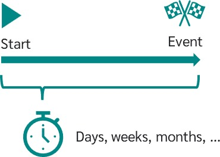
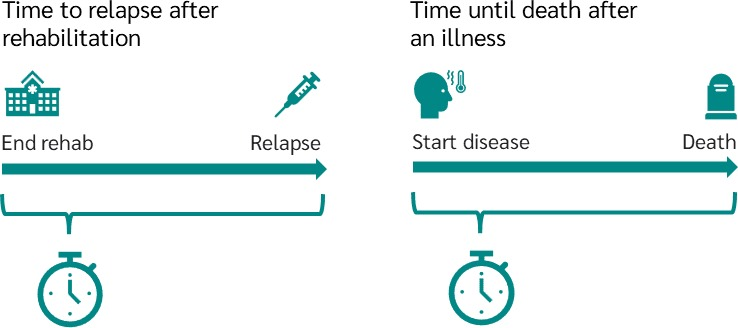
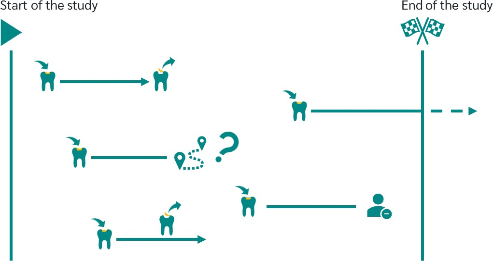
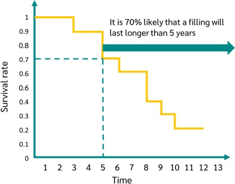

Survival Analysis?
Survival time analysis is a group of statistical methods in which the variable under study is the time until an event occurs.
What does time to occurrence of an event mean?
Survival time analysis considers a variable that has a start time and, when a particular event occurs, an end time.
The time between the start time and the event is the focus of survival analysis. For example,
time may be measured in days, weeks or months.

Use Case for Survival Time Analysis
An example would be to look at the time between a drug withdrawal and the person's relapse.
The start time would then be the end of the withdrawal and the event considered would be the relapse.
For example, you might be interested in whether different types of treatment have an effect on the time to relapse.

Censored Data
First of all, it is important to remember that a study cannot go on indefinitely, but is limited in time.
For reasons of resources (time, money, etc.) and simply because you want to publish the results at some point, each study has a clear start and end date.

Let's say you are a dental technician and you want to analyse the "survival time" of a filling in a tooth.
If a filling is inserted within this time period and then the filling breaks out again within this time period and
this is also documented, then there is a valid case. The event has occurred. However, it is also possible that a filling
is inserted and then the end of the study is reached before the event occurs. Or it can happen that a subject decides not to continue with the study.
In both cases, you do not know when or if the event under consideration has occurred. Further another event can occurs, that is not considered in the study.
For example, the patient could die or even lose the whole tooth. In both cases, the event considered, that the filling breaks out, can no longer occur.
It can also happen that the patient does not notice that the filling has broken out and it is only discovered at the next routine check-up.
All in all, there are many cases where data is not fully available. This data is called censored data.
Kaplan Meier Curve
The Kaplan-Meier curve is commonly used to analyze time-to-event data, such as the time until death or the time until a specific event occurs.
For this, the Kaplan Meier curve graphically represent the survival rate or survival function. Time is plotted on the x-axis and the survival rate is plotted on the y-axis.
What is Survival Rate? At this point, we go back to the tooth filling example. Suppose we have collected data on how long it takes for a filling to erupt.
In the Kaplan Meier curve, you can now read how likely it is that a filling will last longer than a certain time.
In this context, you might be interested, for example, in the probability that your filling will last longer than 5 years.
To do this, simply move to 5 years on the x-axis of the graph and see what the survival rate (y-axis) is.
At 5 years, the Kaplan Meier curve gives you a value of 0.7. So it is 70% likely that a filling will last longer than 5 years.

Retention vs Survival Analysis Methodology
Retention Analysis Dashboard measures how many patients return to your product over some specified time for a HCP.
In contrast, Survival Analysis comprises a set of statistical methodologies
wherein the focal variable of investigation is the duration leading up to the incidence of an event that is whether a patient successfully
received a shipment by the conclusion of the study period or not.
We will elucidate the methodology for Orenitram by employing a six-month retention dashboard as a case study for illustration.
- Retrieve the shipment data for patients who have received shipments during the period from March 2022 to Feb 2023.
It is imperative to verify that these patients do not possess any historical records of prior shipments.
- Perform an analysis on the entire patient population within the observational dataset to determine whether, after a six-month period, they have received the scheduled shipment.
For instance, if a patient received the first shipment in April 2022, subsequently verify whether the same patient also received a shipment in October 2022.
A successful receipt of the shipment during this timeframe indicates patient retention.
- Aggregate the data at HCP level to determine the number of patients retained relative to the total number of patients
and calculate the percentage of patients retained. For example, Dr. Eric Roberts achieved a six-month retention performance rate of 77%.
We will elucidate the methodology by employing a
Kaplan-Meier Model for Tyvaso.
- Retrieve the shipment data for patients who have received shipments during the period from Oct 2020 to Sep 2023.
It is essential to conduct a thorough verification to confirm that no patient records exist for shipments made between April 2020 and September 2020.
Furthermore, we should promptly remove all patients who have undergone a transition from Tyvaso to another UT drug from our records.
- Determine the duration of a patient's month on therapy by utilizing the date of their initial shipment and the date of their final shipment.
- Find the status of the final shipment for a patient has been received during the month of September 2023 or not.
- Apply Kaplan-Meier Model on the datset and visualize a survival curve as part of the analytical process.